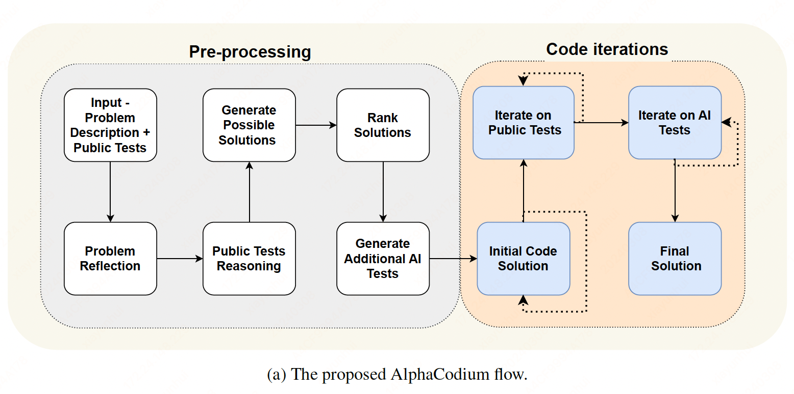
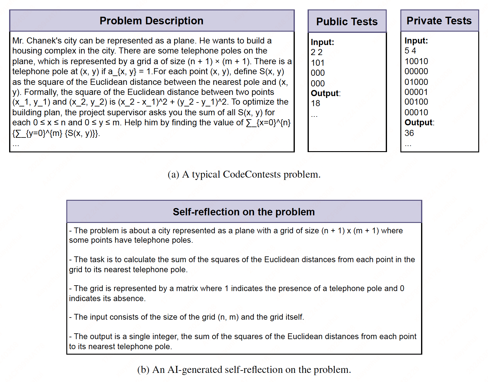
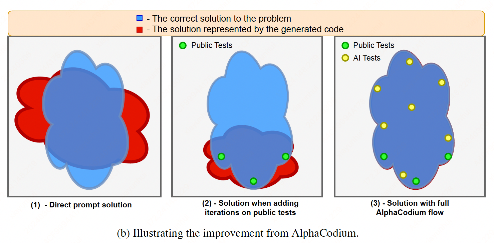

AlphaCodium#
Note
With a sparse reward signal, code generation tasks require searching in the huge structured space of possible programs. Correct solutions to the same problem can look significantly different, and judging if a partial or incorrect solution is useful is a difficult challenge - a single-character edit can completely alter the solution’s behavior. Due to the unique nature of code generation tasks, common prompting techniques that have been optimized for natural language tasks, may not be as effective when applied to code generation.
The Proposed Flow#
Overview#
In this paper, we present AlphaCodium, a code-oriented flow. The proposed flow, is divided into two main phases: a pre-processing phase where we reason about the problem in natural language, and an iterative code generation phase where we generate, run, and fix a code solution against public and AI-generated tests.

Flow stages#
Problem reflection: Describe the problem, in bullet points, while addressing the problem goal, inputs, outputs, rules, constraints, and other relevant details that appear in the problem description.

Public tests reasoning: Explain why each test input leads to the output.
Generate possible solutions: Generate a list of 2-3 possible
solutions to the problem, described in natural language.
Rank solutions: Rank the possible solutions and choose the “best solution”, in terms of correctness, simplicity, and robustness.
Generate additional AI tests: Generate an additional 6- 8 diverse input-output tests for the problem. Try to cover cases and aspects not covered by the original public tests.
Initial code solution: The goal of this stage is to generate an initial code solution to the problem. It is essential that this code will reasonably ”close” to the correct code, so the run-fix iterations in the next stages will have a better chance of succeeding. The stage flow:
Choose a potential solution. Generate a corresponding code, and run it on selected public and AI tests.
Repeat this process until the tests pass, or until a trylimit is reached.
The first code that passes the tests, or the code with the closest output, will be used as the base code for the next steps.
Iterate on public tests: Start from the base code. Iteratively run it on the public tests. If the code fails on a specific test, try to fix it, given the error message.
Iterate on AI-generated Tests: Continue the run-fix iterations on the AI-generated tests. Use “test anchors”.
Additional insights#
Firstly, the flow relies on knowledge accumulation - trying to progress from easy to hard, gaining knowledge and insight along the way to help with the more difficult stages. For example, the output of the first step, problem reflection, can be utilized as prompt input to more difficult steps like generate possible solutions.
Another key observation in designing AlphaCodium is that for AI, generating more tests is easier than generating a full solution code. Generating additional tests requires mainly understanding the problem and basic brute-force or logical reasoning. This is in contrast to generating a correct solution code, which requires a complete algorithmic solution, equivalent to correctly solving any possible pair of inputoutput tests. As a result, we can generate more AI tests, and then leverage them to improve the code creation phase.

Also note that some steps can be combined into a single LLM call. In practice, structured output enables to combine multiple stages into a single LLM call, in order to save resources, or because a model performs better when doing specific tasks concurrently.
Code-Oriented Design Concepts#
Now we will present additional design concepts, tricks, and best practices we found beneficial when trying to solve code generation problems. AlphaCodium flow extensively uses these design concepts.
YAML Structured output.
Semantic reasoning via bullet points analysis.
LLMs do better when generating a modular code: when LLMs are asked to generate a single lengthy function, we observed poor results - the code often contains bugs or logical mistakes. When clearly asking the model to: “divide the generated code into small sub-functions, with meaningful names and functionality”, we observe a better-produced code, with fewer bugs, and higher success rates for the iterative fixing stages.
Soft decisions with double validation: Quite often, some of the tests the model generates will be plain wrong. With a double validation process, we add an extra step where, given the generated output, the model is asked to re-generate the same output, but correct it if needed.
Postpone decisions, try to avoid direct questions, and leave room for exploration.
Test anchors.